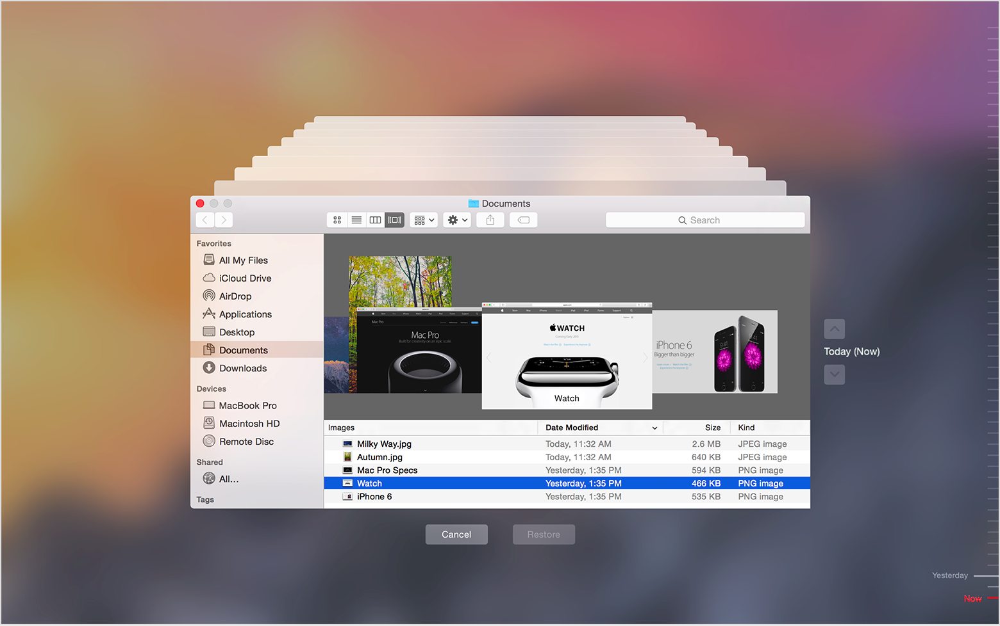
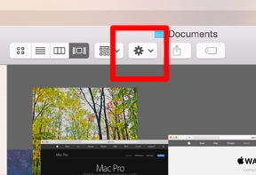

<!DOCTYPE HTML>
<html>
<head><meta name="generator" content="Hexo 3.8.0">
    <meta charset="utf-8">
    <meta http-equiv="X-UA-Compatible" content="chrome=1">
    <meta name="viewport" content="width=device-width, initial-scale=1, maximum-scale=1, user-scalable=no">

    

    <title>MAC OSX - 大量移除不需要的 TimeMachine 備份 | 墨嗓 之 已知用火</title>
    <meta name="author" content="墨嗓 陳佑竹">
    
    <meta name="description" content="批次大量移除在 TimeMachine 中，不需要的備份，以增加使用空間。">
    
    
  <meta name="viewport" content="width=device-width, initial-scale=1, maximum-scale=1">

    <meta property="og:title" content="MAC OSX - 大量移除不需要的 TimeMachine 備份">
    <meta property="og:site_name" content="墨嗓 之 已知用火">

    
    <meta property="og:image" content="undefined">
    

    <link rel="icon" type="image/png" href="/favicon.png">
    <link rel="alternate" href="/atom.xml" title="墨嗓 之 已知用火" type="application/atom+xml">
    <link rel="stylesheet" href="/css/lib/materialize.min.css">
    <link rel="stylesheet" href="/css/lib/font-awesome.min.css">
    <link rel="stylesheet" href="/css/style.css" media="screen" type="text/css">
    <link rel="canonical" href=" { { site.url } }{ { page.url } }">
    <script type="text/javascript">
      var host = "recordmind.com";
      if ((host == window.location.host) && (window.location.protocol != "https:"))
        window.location.protocol = "https";
    </script>
    
        <link rel="stylesheet" href="/css/lib/prettify-tomorrow-night-eighties.css" type="text/css">
    
    <!--[if lt IE 9]><script src="//html5shiv.googlecode.com/svn/trunk/html5.js"></script><![endif]-->
</head>
</html>

<body>
    

    <nav class="indigo">
    <div class="nav-wrapper">
        <a href="#" data-activates="main-menu" class="button-collapse">
            <i class="fa fa-navicon"></i>
        </a>
        <div class="">
            <a href="/" class="brand-logo hide-on-med-and-down">墨嗓 之 已知用火</a>
            <ul class="right hide-on-med-and-down">
                
                    <li>
                        <a class="menu-home " href="/">
                            <i class="fa fa-home "></i>
                            
                            首頁
                        </a>
                    </li>
                
                    <li>
                        <a class="menu-archive " href="/archives">
                            <i class="fa fa-archive "></i>
                            
                            彙整
                        </a>
                    </li>
                
                    <li>
                        <a class="menu-category category-menu" href="javascript:;" data-activates="category-menu">
                            <i class="fa fa-bookmark "></i>
                            
                            分類
                        </a>
                    </li>
                
                    <li>
                        <a class="menu-reading " href="/reading">
                            <i class="fa fa-book "></i>
                            
                            讀書
                        </a>
                    </li>
                
                    <li>
                        <a class="menu-about " href="/about">
                            <i class="fa fa-user "></i>
                            
                            關於
                        </a>
                    </li>
                
                    <li>
                        <a class="menu-search modal-trigger " href="#search">
                            <i class="fa fa-search "></i>
                            
                            搜尋
                        </a>
                    </li>
                
            </ul>
            <div>
    <ul class="side-nav indigo darken-1" id="main-menu">
        
        <li class="side-user">
            <div class="row">
                <div class="col s4 no-padding">
                    
                </div>
                <div class="info col s8 valign-wrapper no-padding">
                    <div class="valign">
                        <p class="name">墨嗓 陳佑竹</p>
                        <p class="desc">PHP/Redmine/DevOps</p>
                    </div>
                </div>
            </div>
        </li>
        

        
            <li class="no-padding">
                <a class="waves-effect menu-home " href="/">
                    <i class="fa fa-home "></i>
                    
                    首頁
                </a>
            </li>
        
            <li class="no-padding">
                <a class="waves-effect menu-archive " href="/archives">
                    <i class="fa fa-archive "></i>
                    
                    彙整
                </a>
            </li>
        
            <li class="no-padding">
                <a class="waves-effect menu-category category-menu" href="javascript:;" data-activates="category-menu">
                    <i class="fa fa-bookmark "></i>
                    
                    分類
                </a>
            </li>
        
            <li class="no-padding">
                <a class="waves-effect menu-reading " href="/reading">
                    <i class="fa fa-book "></i>
                    
                    讀書
                </a>
            </li>
        
            <li class="no-padding">
                <a class="waves-effect menu-about " href="/about">
                    <i class="fa fa-user "></i>
                    
                    關於
                </a>
            </li>
        
            <li class="no-padding">
                <a class="waves-effect menu-search modal-trigger " href="#search">
                    <i class="fa fa-search "></i>
                    
                    搜尋
                </a>
            </li>
        
    </ul>

    <ul class="side-nav indigo darken-1" id="category-menu">
    

            

            <li class="collapse-level-0" collapse-level="0">
                <a class="no-padding" href="/categories/Notes/">
                    Notes <span class="right">6 篇</span></a>
                
            </li>

        

            <li class="collapse-level-1" collapse-level="1">
                <a class="no-padding" href="/categories/Notes/PHP/">
                    PHP <span class="right">1 篇</span></a>
                
            </li>

        

            <li class="collapse-level-1" collapse-level="1">
                <a class="no-padding" href="/categories/Notes/MAC/">
                    MAC <span class="right">1 篇</span></a>
                
            </li>

        

            <li class="collapse-level-1" collapse-level="1">
                <a class="no-padding" href="/categories/Notes/Sublime/">
                    Sublime <span class="right">1 篇</span></a>
                
            </li>

        

            <li class="collapse-level-1" collapse-level="1">
                <a class="no-padding" href="/categories/Notes/Hexo/">
                    Hexo <span class="right">1 篇</span></a>
                
            </li>

        

            <li class="collapse-level-1" collapse-level="1">
                <a class="no-padding" href="/categories/Notes/Utility/">
                    Utility <span class="right">2 篇</span></a>
                
            </li>

        

    </ul>
</div>

        </div>
    </div>
</nav>

<div id="search" class="modal search-modal">
    <div class="row">
        <div class="input-field col s12">
              <input id="search-input" type="text">
              <label for="search-input">搜尋</label>
        </div>

    </div>
    <div id="search-result" class="search-result col s12">

    </div>
</div>


    <main>
        <div class="container main-container">
    <nav class="page-nav hide-on-small-only">
    <div class="nav-wrapper indigo">
        <span class="breadcrumb">當前位置（分類目錄）</span>
        
            
    
    
    <a class="breadcrumb" href="/categories/Notes/">Notes</a><a class="breadcrumb" href="/categories/Notes/MAC/">MAC</a>


        

        
    </div>
</nav>

<article>
    <div class="card">
        <div class="card-content">
            

            <div class="article-title">
                
    
        <h1>MAC OSX - 大量移除不需要的 TimeMachine 備份</h1>
    


            </div>
            <time class="pink-link-context" datetime="2016-09-17T11:11:15.000Z"><a href="/Notes/MAC/Remove-unnecessary-backups-from-TimeMachine/">2016-09-17</a></time>

            <span id="busuanzi_container_page_pv" class="read-times-container">
    <i class="fa fa-eye"></i>
    <span id="busuanzi_value_page_pv"></span>
</span>

            
    <div class="tags-row">
        
            <a href="/tags/Note/" class="chip pink lighten-1">Note</a>
        
            <a href="/tags/MACOS/" class="chip pink lighten-1">MACOS</a>
        
            <a href="/tags/Utility/" class="chip pink lighten-1">Utility</a>
        
    </div>


            <div class="toc pink-link-context hide-on-med-and-down">
    
</div>


            <div class="entry pink-link-context">
                <p>這幾天在整理自己 NAS 的空間，發現 TimeMachine 佔掉硬碟裡許多的空間，甚至比我的 MacBook Air 本身 256G 的空間都還大上好幾倍，大概有個 1.x T的大小。進入細查之後才發現，原來從買了 MAC 之後，就沒有做過備份空間的清除，這就恐怖了。於是試著進入 TimeMachine 中刪除比較舊的備份。</p>
<p>進入 TimeMachine 之後，可以由右邊的時間軸點選你要選擇的時間點。</p>
<a id="more"></a>
<p><br>(Image from : <a href="https://support.apple.com/en-us/HT201250" target="_blank" rel="noopener">Use Time Machine to back up or restore your Mac - Apple Support</a>)</p>
<p>選擇到要刪除的備份快照後，點選如下圖上方的齒輪，即可以看到刪除的樣式。</p>
<p></p>
<p>很明顯的，這個方案只適合只有幾個需要刪除的情況。於是找到 Apple Develop 手冊上的說法，關於 TimeMachine 有一個 <code>tmutil</code>  (Time Machine Utility) 的工具指令可以使用，<code>tmutil</code> 的功能非常多，舉凡建立新的快照、備份，甚至是進行兩個快照之間的差異比對他都可以。針對刪除不想要的 TimeMachine 備份則可以下以下指令。</p>
<figure class="highlight sh"><table><tr><td class="gutter"><pre><span class="line">1</span><br></pre></td><td class="code"><pre><span class="line">sudo tmutil delete /full/path/to/backup/Backups.backupdb/machine/backup-name</span><br></pre></td></tr></table></figure>
<p>以我自己的 MacBook Air 的話，備份路徑就是：</p>
<figure class="highlight sh"><table><tr><td class="gutter"><pre><span class="line">1</span><br></pre></td><td class="code"><pre><span class="line">/Volumes/Time Machine 備份/Backups.backupdb/mouson<span class="string">'s MacBook Air</span></span><br></pre></td></tr></table></figure>
<p>完整路徑可能就是：</p>
<figure class="highlight sh"><table><tr><td class="gutter"><pre><span class="line">1</span><br></pre></td><td class="code"><pre><span class="line">/Volumes/Time Machine 備份/Backups.backupdb/mouson<span class="string">'s MacBook Air/2016-09-14-073950</span></span><br></pre></td></tr></table></figure>
<p>可以看到 Time Machine 備份方式每個快照都會以時間日期的方式建立資料夾內容。因此我們就可以透過指令刪除一系列的就備份。</p>
<p>例如我要刪除 2014 年 1 月的所有備份，就可以執行以下指令：</p>
<figure class="highlight sh"><table><tr><td class="gutter"><pre><span class="line">1</span><br></pre></td><td class="code"><pre><span class="line">sudo tmutil delete /full/path/to/backup/Backups.backupdb/machine/2014-01-*</span><br></pre></td></tr></table></figure>
<p>網路上也可以找到有人寫了簡易的批次檔，如這個部落格：<a href="http://thegreyblog.blogspot.tw/2014/03/shrink-your-time-machine-backups-and.html" target="_blank" rel="noopener">The Grey Blog: Shrink Your Time Machine Backups and Free Disk Space</a> 所提供的範例。</p>
<figure class="highlight sh"><table><tr><td class="gutter"><pre><span class="line">1</span><br><span class="line">2</span><br><span class="line">3</span><br><span class="line">4</span><br><span class="line">5</span><br><span class="line">6</span><br></pre></td><td class="code"><pre><span class="line">$ sudo bash</span><br><span class="line">Password:</span><br><span class="line">$ <span class="keyword">for</span> i <span class="keyword">in</span> /Volumes/Time\ Machine\ Backups/Backups.backupdb/iMac/2014-01* ; \</span><br><span class="line">  <span class="keyword">do</span> \</span><br><span class="line">    tmutil delete <span class="string">"<span class="variable">$i</span>"</span> ; \</span><br><span class="line">  <span class="keyword">done</span></span><br></pre></td></tr></table></figure>
<p>清除之後，在下次 Time Machine 備份的時候，系統就會使用掉你刪除的空間。而如果需要馬上清除空間，也可以使用 MAC 提供的另外一個工具：<code>hdiutil</code> 詳細的用法可以參考官方手冊：<a href="https://developer.apple.com/legacy/library/documentation/Darwin/Reference/ManPages/man8/tmutil.8.html" target="_blank" rel="noopener">tmutil(8) Mac OS X Manual Page</a>，清除的方法如下：</p>
<figure class="highlight sh"><table><tr><td class="gutter"><pre><span class="line">1</span><br></pre></td><td class="code"><pre><span class="line">sudo hdiutil compact /path/to/disk-image</span><br></pre></td></tr></table></figure>
<p>清除完畢之後，就可以獲得可用的空間了。我自己在執行 <code>tmutil delete</code> 時候發現，單獨刪除一個系統本身都還是需要重新計算一次變異，因此效率不是很好。刪除一個 1xG 的快照在無線網路的環境下刪了快半小時。所以，在使用 <code>tmutil</code> 做刪除時，如果時間不允許，砍掉重練或許也是一招。(這什麼結論呀！XD) </p>

                
<p class="pink-link-context">
    <a href="/Notes/Utility/Utility-copy-hyperlink-as-markdown-format/" rel="next" title="Utility - 在 Chrome 把連結複製成 Markdown 格式">
    上一篇：Utility - 在 Chrome 把連結複製成 Markdown 格式
  </a>
</p>


<p class="pink-link-context">
    <a href="/Notes/PHP/Implement-toArray-method-used-array-filter/" rel="next" title="PHP - 使用 array_filter 讓你的程式碼更簡潔易讀">
    下一篇：PHP - 使用 array_filter 讓你的程式碼更簡潔易讀core
  </a>
</p>


            </div>
			
        </div>
    </div>
</article>


    <section id="comment">
        <div id="disqus_thread"></div>
        <script>
            var disqus_config = function() {
                this.page.url = 'https://usedfire.net/Notes/MAC/Remove-unnecessary-backups-from-TimeMachine/';
                this.page.identifier = 'Notes/MAC/Remove-unnecessary-backups-from-TimeMachine/';
            };
            (function() {
                var d = document,
                    s = d.createElement('script');
                s.src = '//usedfire.disqus.com/embed.js';
                s.setAttribute('data-timestamp', + new Date());
                (d.head || d.body).appendChild(s);
            })();
        </script>
        <noscript>Please enable JavaScript to view the
            <a href="https://disqus.com/?ref_noscript" rel="nofollow">comments powered by Disqus.</a>
        </noscript>
    </section>


</div>

        <div class="fixed-action-btn float-sitemap">
    <a class="btn-floating btn-large pink">
      <i class="fa fa-caret-square-o-up"></i>
    </a>
    <ul>
      <li><a class="btn-return-top btn-floating waves-effect green" title="回到頂部"><i class="fa fa-arrow-circle-o-up"></i></a></li>
      <li><a class="btn-floating waves-effect button-collapse yellow darken-1" data-activates="main-menu" title="菜單"><i class="fa fa-navicon"></i></a></li>
    </ul>
  </div>

    </main>
    <footer class="page-footer indigo darken-1">
    
    <div class="footer-container container">
        <div class="row">
            
            <div class="social-group col m4 s12">
                <h5 class="white-text">社交</h5>
                
                    <a class="social-link" href="https://www.facebook.com/mouson" target="_blank">
                        <i class="fa fa-2x fa-facebook"></i>
                    </a>
                
                    <a class="social-link" href="https://github.com/mouson" target="_blank">
                        <i class="fa fa-2x fa-github"></i>
                    </a>
                
                    <a class="social-link" href="/atom.xml" target="_blank">
                        <i class="fa fa-2x fa-rss"></i>
                    </a>
                
                
    <script async src="//dn-lbstatics.qbox.me/busuanzi/2.3/busuanzi.pure.mini.js">
    </script>
    <div class="site-visitors-container white-text">
        <span>
            <i class="fa fa-user"></i>
            <span class="busuanzi-value" id="busuanzi_value_site_uv"></span>
        </span>
        <span>&nbsp;|&nbsp;</span>
        <span>
            <i class="fa fa-eye"></i>
            <span class="busuanzi-value" id="busuanzi_value_site_pv"></span>
        </span>
    </div>


            </div>
            

            
            <div class="col m8 s12">
                <h5 class="white-text">友情連結</h5>
                
                    <a class="social-link" href="http://oomusou.io/" target="_blank">點燈坊</a>
                
            </div>
            
        </div>
    </div>
    

    <div class="footer-copyright pink-link-context">
        <div class="container">
            © 2016-2019 UsedFire.net, All rights reserved.
            <p class="right" style="margin-top: 0;">本站使用 <a href="https://hexo.io">Hexo</a> 建置 | 主題 <a href="https://github.com/raytaylorlin/hexo-theme-raytaylorism">raytaylorism</a></p>
        </div>
    </div>
</footer>


    <noscript>
    <div class="noscript">
        <p class="center-align">当前网速较慢或者你使用的浏览器不支持博客特定功能，请尝试刷新或换用Chrome、Firefox等现代浏览器</p>
    </div>
</noscript>
<div class="noscript">
    <p class="center-align">当前网速较慢或者你使用的浏览器不支持博客特定功能，请尝试刷新或换用Chrome、Firefox等现代浏览器</p>
</div>


<script src="/js/jquery.min.js"></script>
<script src="/js/materialize.min.js"></script>

<script>
    (function($) {
        $(document).ready(function() {
            // 隐藏禁用javascript（针对微信内置浏览器）的提示
            $('.noscript').hide();

            // 图片缩放效果
            var $imgs = $('img').not('.slider-image').not('.avatar-image').not('.carousel-image').not('.card-cover-image').not('.qrcode');

            // 给图片加上点击放大效果（materialbox插件）
            $imgs.addClass('materialboxed').each(function(i, el) {
                $(this).attr('data-caption', $(this).attr('alt') || ' ');
            }).materialbox();

            // 优化表格的显示
            $('table').each(function() {
                var $table = $(this);
                // 除去多行代码的情况
                if ($table.find('pre').length == 0) {
                    $table.addClass('responsive-table striped bordered');
                }
            });

            // 首页幻灯片
            $('.slider').slider({indicators: true, full_width: true, interval: 8000});

            $(".button-collapse").sideNav();
            $(".category-menu").sideNav();

            // 针对gallery post
            $('.carousel').carousel({full_width: true});
            $('.carousel-control.prev').click(function() {
                $('.carousel').carousel('prev');
            });
            $('.carousel-control.next').click(function() {
                $('.carousel').carousel('next');
            });

            // 文章目录
            $('article').not('.simple-article').find('h1').add('h2').add('h3').add('h4').add('h5').add('h6').scrollSpy();

            // 目录随屏幕滚动（防止目录过长越过footer）
            var $toc = $('.toc');
            var scrollTargetTop = 0;
            $(window).scroll(function() {
                var $activeLink = $toc.find('a.active.section');
                if ($(window).scrollTop() < 100) {
                    scrollTargetTop = 0;
                } else {
                    if ($activeLink[0]) {
                        scrollTargetTop = $activeLink.offset().top - $toc.offset().top;
                    }
                }
                $toc.css('top', '-' + scrollTargetTop + 'px');
            });

            // 修正文章目录的left-border颜色
            var color = $('.table-of-contents-text').css('color');
            $('.table-of-contents-link').css('border-left-color', color);

            // 针对移动端做的优化：FAB按钮点击一下收回
            if (/Android|webOS|iPhone|iPad|iPod|BlackBerry|IEMobile|Opera Mini/i.test(navigator.userAgent)) {
                $('.fixed-action-btn').addClass('click-to-toggle');
            }
            // 回到顶部
            $('.btn-return-top').click(function() {
                $('body, html').animate({
                    scrollTop: 0
                }, 500);
            });

            // 重置读书页面的Tab标签页的颜色
            $('li.tab a').hover(function() {
                $(this).toggleClass('text-lighten-4');
            });
            $('.indicator').addClass('pink lighten-2');

            

            // 搜索功能
            $('.modal-trigger').leanModal({
                // 打开搜索框时自动聚焦
                ready: function() {
                    if ($('#search').is(":visible")) {
                        $('#search-input').focus();
                    }
                }
            });
            var searchXml = "search.xml";
            if (searchXml.length == 0) {
             	searchXml = "search.xml";
            }
            var searchPath = "/" + searchXml;
            initSearch(searchPath, 'search-input', 'search-result');
        });

        // 初始化搜索与匹配函数
        var initSearch = function(path, search_id, content_id) {
            'use strict';
            $.ajax({
                url: path,
                dataType: "xml",
                success: function(xmlResponse) {
                    // get the contents from search data
                    var datas = $("entry", xmlResponse).map(function() {
                        return {
                            title: $("title", this).text(),
                            content: $("content", this).text(),
                            url: $("url", this).text()
                        };
                    }).get();
                    var $input = document.getElementById(search_id);
                    var $resultContent = document.getElementById(content_id);
                    $input.addEventListener('input', function() {
                        var str = '<ul class=\"search-result-list\">';
                        var keywords = this.value.trim().toLowerCase().split(/[\s\-]+/);
                        $resultContent.innerHTML = "";
                        if (this.value.trim().length <= 0) {
                            return;
                        }
                        // perform local searching
                        datas.forEach(function(data) {
                            var isMatch = true;
                            var content_index = [];
                            var data_title = data.title.trim().toLowerCase();
                            var data_content = data.content.trim().replace(/<[^>]+>/g, "").toLowerCase();
                            var data_url = data.url;
                            var index_title = -1;
                            var index_content = -1;
                            var first_occur = -1;
                            // only match artiles with not empty titles and contents
                            if (data_title != '' && data_content != '') {
                                keywords.forEach(function(keyword, i) {
                                    index_title = data_title.indexOf(keyword);
                                    index_content = data_content.indexOf(keyword);
                                    if (index_title < 0 && index_content < 0) {
                                        isMatch = false;
                                    } else {
                                        if (index_content < 0) {
                                            index_content = 0;
                                        }
                                        if (i == 0) {
                                            first_occur = index_content;
                                        }
                                    }
                                });
                            }
                            // show search results
                            if (isMatch) {
                                keywords.forEach(function(keyword) {
                                    var regS = new RegExp(keyword, "gi");
                                    data_title = data_title.replace(regS, "<span class=\"search-keyword pink lighten-2\">" + keyword + "</span>");
                                });

                                str += "<li><a href='" + data_url + "' class='search-result-title'>" + data_title + "</a>";
                                var content = data.content.trim().replace(/<[^>]+>/g, "");
                                if (first_occur >= 0) {
                                    // cut out 100 characters
                                    var start = first_occur - 20;
                                    var end = first_occur + 80;
                                    if (start < 0) {
                                        start = 0;
                                    }
                                    if (start == 0) {
                                        end = 100;
                                    }
                                    if (end > content.length) {
                                        end = content.length;
                                    }
                                    var match_content = content.substring(start, end);
                                    // highlight all keywords
                                    keywords.forEach(function(keyword) {
                                        var regS = new RegExp(keyword, "gi");
                                        match_content = match_content.replace(regS, "<span class=\"search-keyword pink lighten-2\">" + keyword + "</span>");
                                    });

                                    str += "<p class=\"search-result\">..." + match_content + "...</p>"
                                }
                                str += "</li>";
                            }
                        });
                        str += "</ul>";
                        $resultContent.innerHTML = str;
                    });
                }
            });
        }
    })(jQuery);
</script>


<script src="/js/prettify.js"></script>
<script type="text/javascript">
    $(document).ready(function() {
        $("pre").addClass("prettyprint");
        prettyPrint();
    });
</script>


<script>
    (function(i,s,o,g,r,a,m){i['GoogleAnalyticsObject']=r;i[r]=i[r]||function(){
        (i[r].q=i[r].q||[]).push(arguments)},i[r].l=1*new Date();a=s.createElement(o),
            m=s.getElementsByTagName(o)[0];a.async=1;a.src=g;m.parentNode.insertBefore(a,m)
    })(window,document,'script','//www.google-analytics.com/analytics.js','ga');

    ga('create', 'UA-1917598-10', 'auto');
    ga('send', 'pageview');

</script>


</body>
</html>
